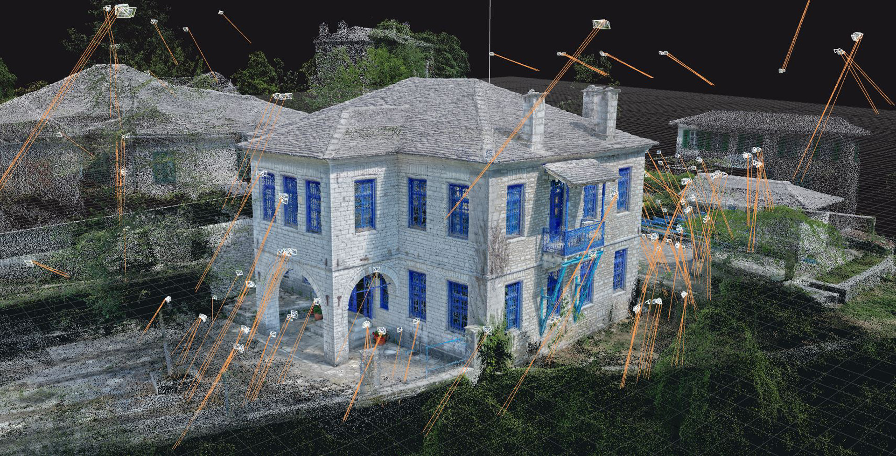
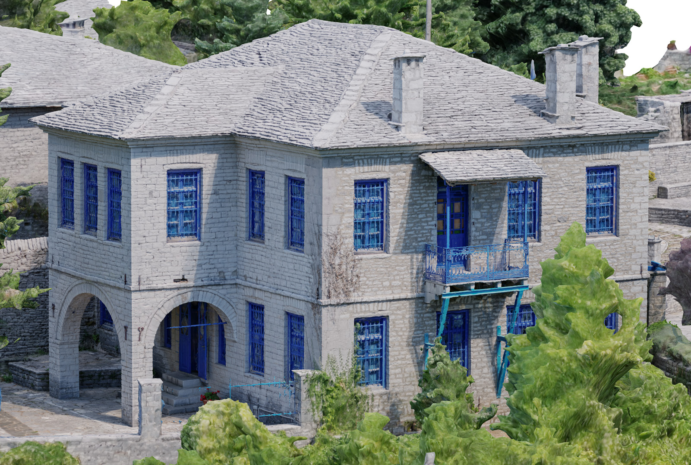
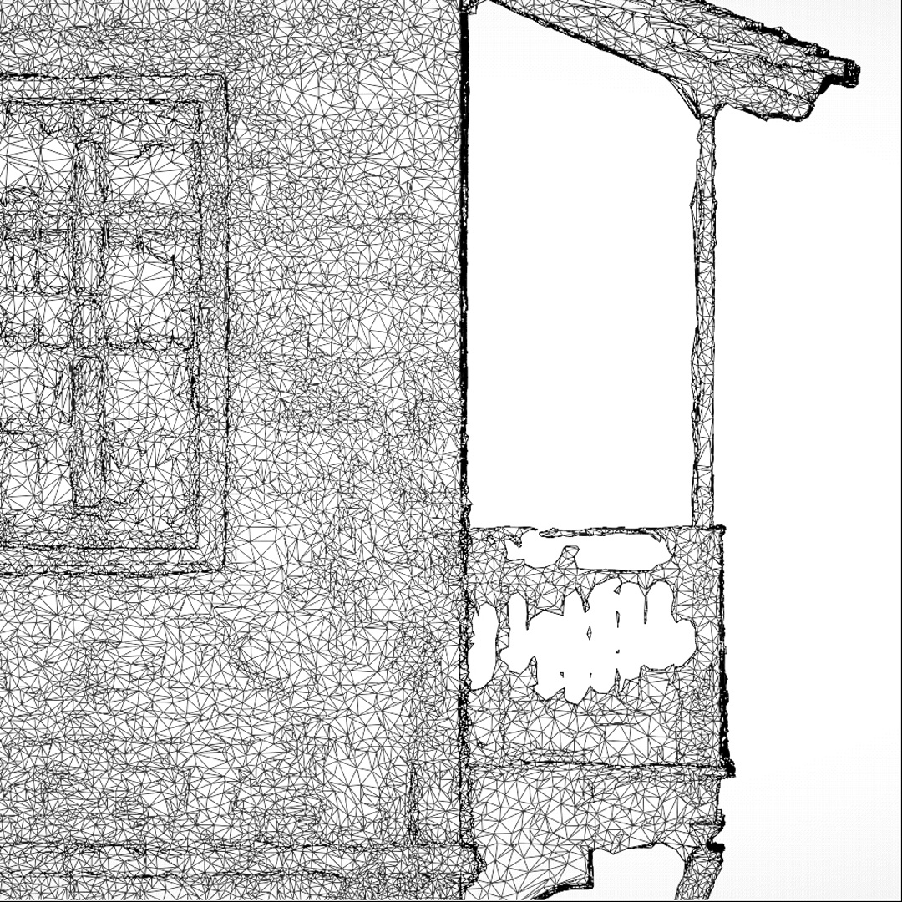
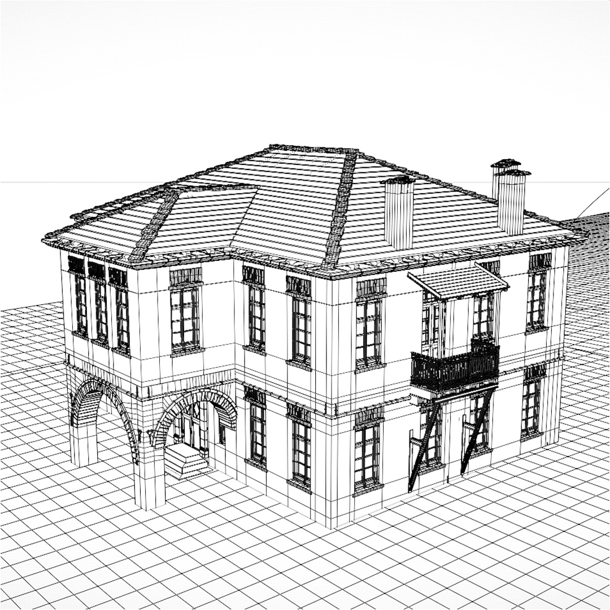
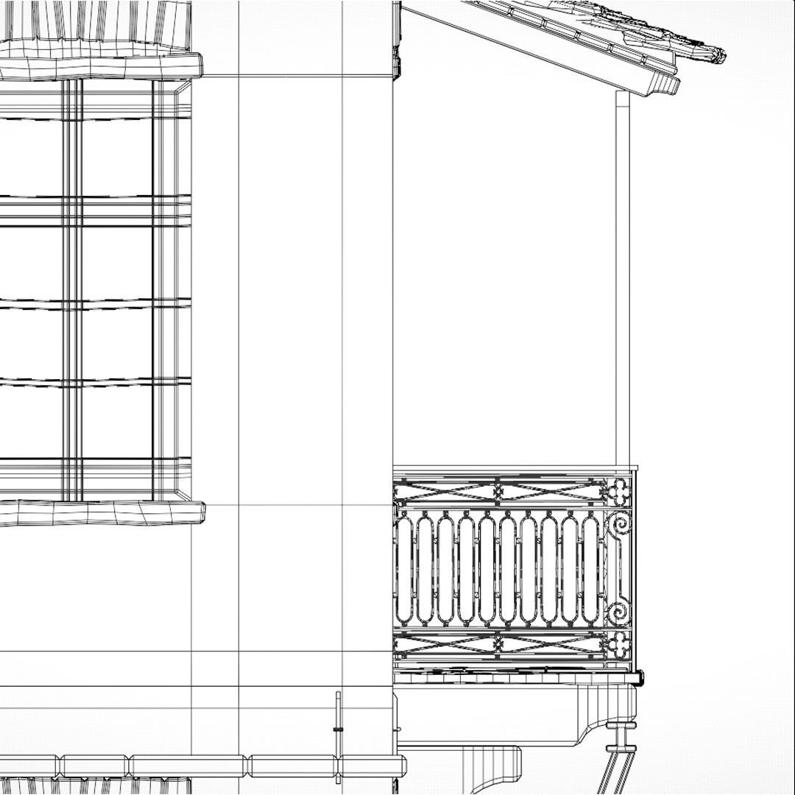
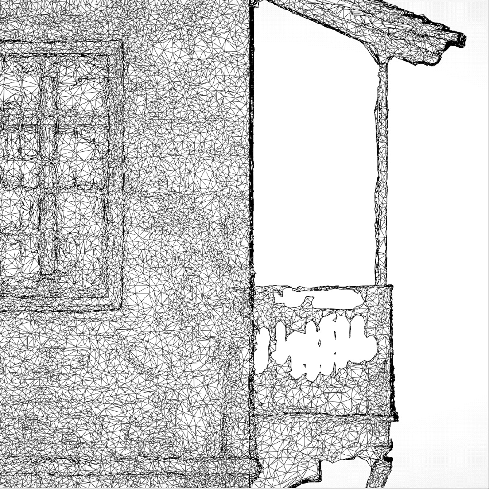
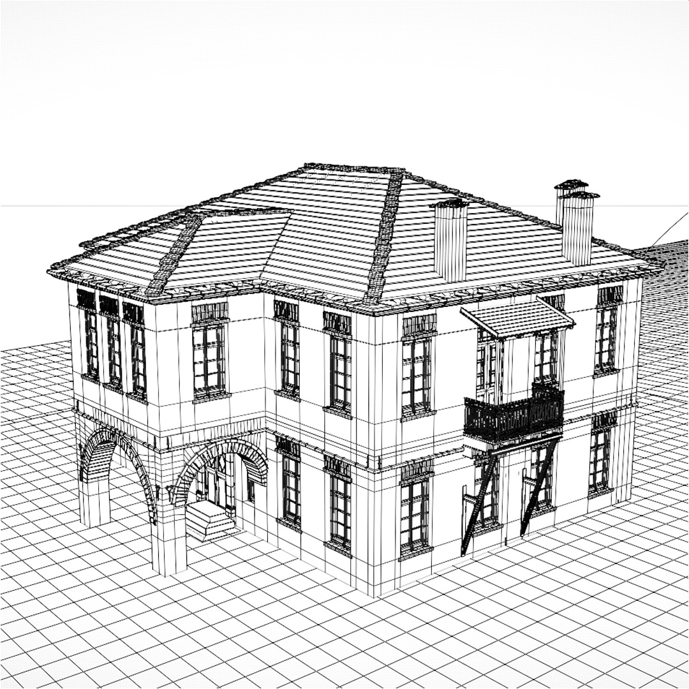
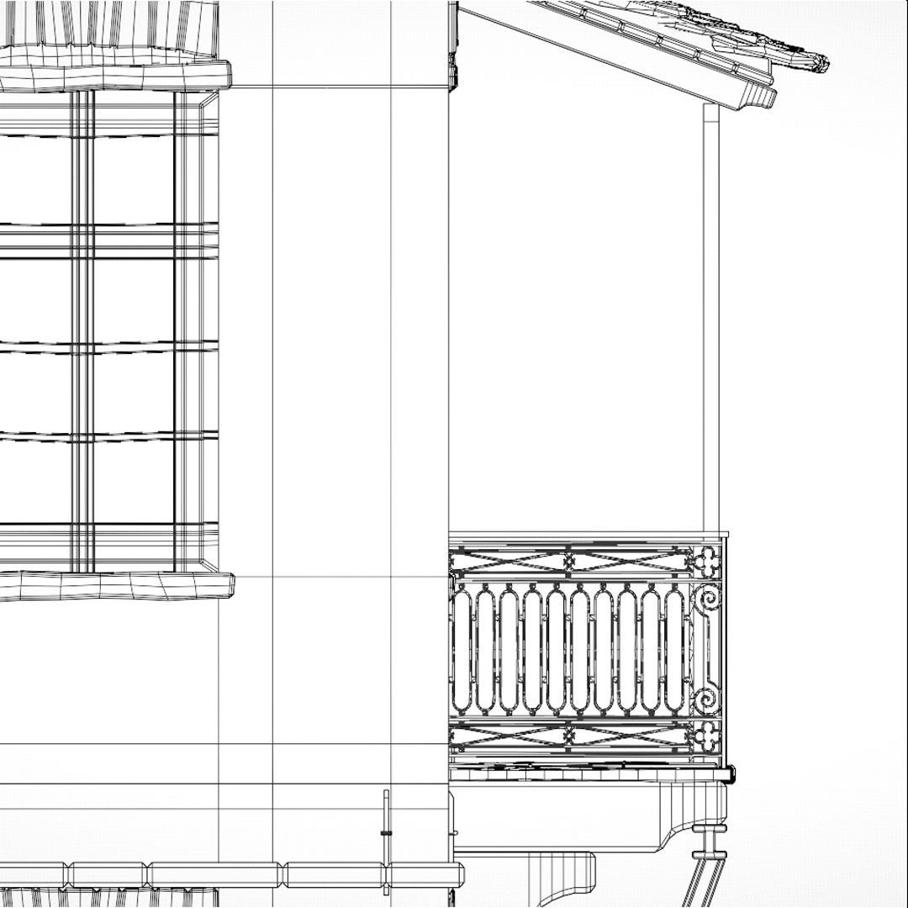

Zagorian Architecture is a digital showcase of the traditional architecture found in the UNESCO-protected region of Zagori, Greece. Centered on the Pantazi Mansion as a case study, the project presents a detailed 3D deconstruction of the building to highlight its architectural features and construction techniques. I served as the lead 3D artist and animator, creating all visual content for the interactive web application, accessible via the link below.
The video content of the application and selected stills. The reconstruction animations were procedurally driven using custom-built Geometry Nodes systems in Blender.
Screenshots from the 3D reconstruction process.
  





A three-color 3D-printed model derived from the digital reconstruction.